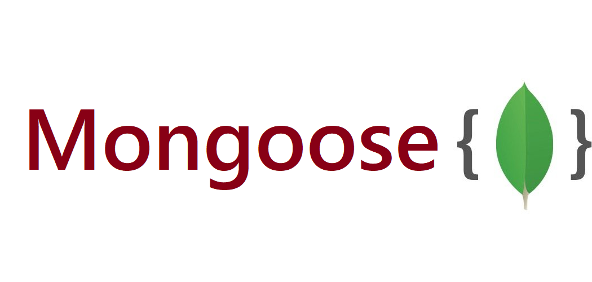
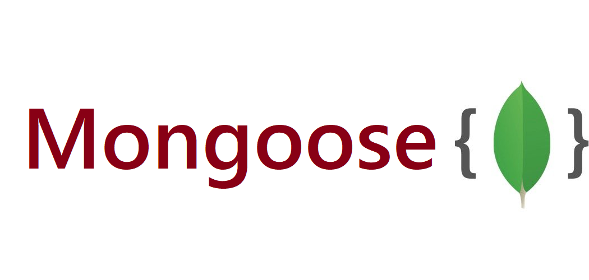

About Me!

Greetings! I'm Asmita Sagarkar, a highly motivated web developer with a passion for creating engaging and user-friendly websites. Currently pursuing my B.Tech degree in the Computer Science with a focus on web development, I thrive on turning ideas into functional and aesthetically pleasing online platforms.
Through my journey as a fourth-year student, I've honed my skills in HTML, CSS, JavaScript, and various web development frameworks. My love for problem-solving and continuous learning drives me to stay up-to-date with the latest industry trends and technologies.
When I'm not coding, you'll find me experimenting with design concepts or collaborating with like-minded individuals on exciting projects. My goal is to contribute to the digital realm, leaving a positive impact on users and clients alike.
Join me on this tech-driven adventure as I embark on new challenges and opportunities in the web development world. Let's connect and build something amazing together! 🚀"
Unlocking potential, one skill at a time - as a fresh and motivated Front-End Developer enthusiast, I proudly present the foundations of my abilities, ready to take on new challenges and make a lasting impact.


 
